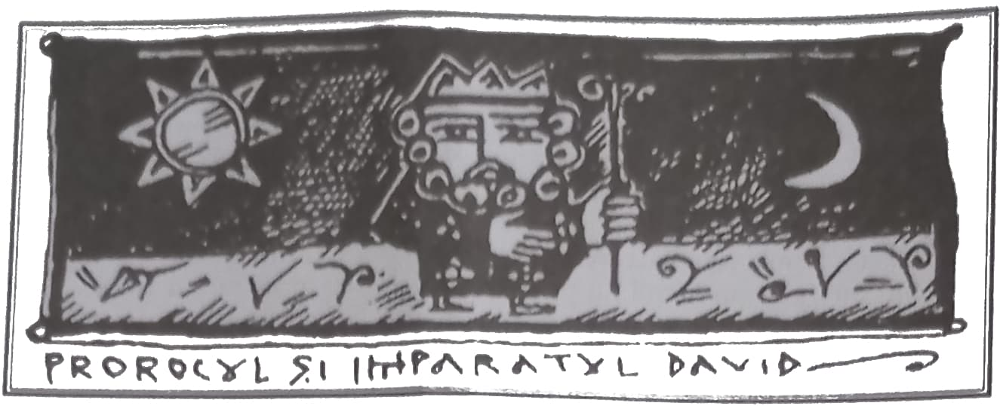
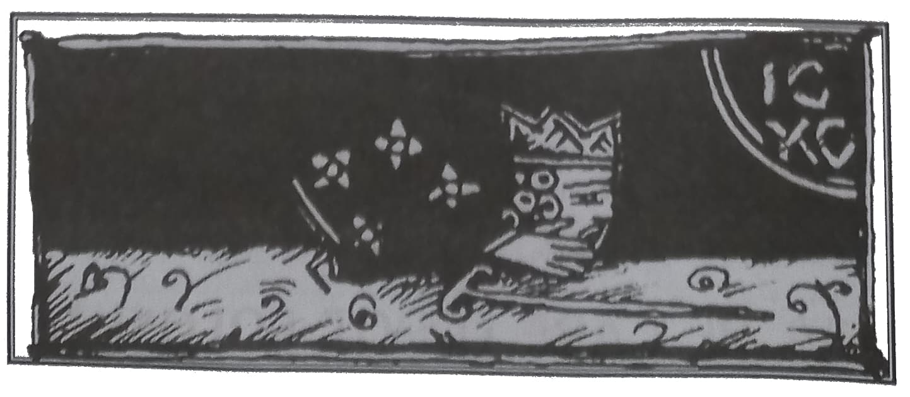
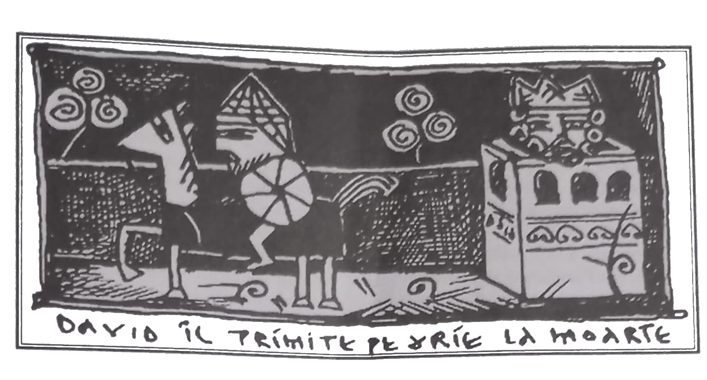
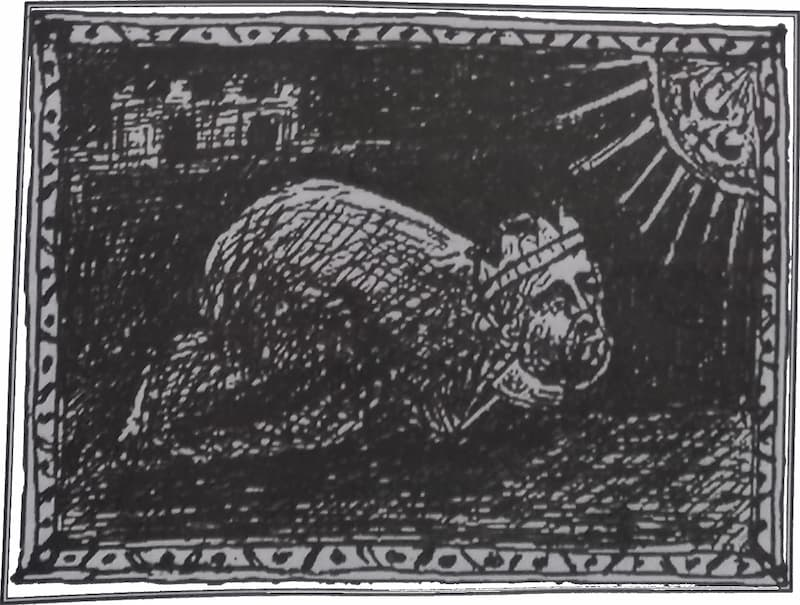

Prorocul și împăratul David, așa cum îl descoperim din Psaltirea scrisă de el și din cărțile regilor, unde ni se istorisește viața sa, este un om deplin care întrunește în sine laolaltă tot zbuciumul și toată înălțarea ființei umane. Sfînta Scriptură ni-l arată pe David ca fiind frumos nu numai la suflet, ci și la trup, fiind curajos și iscusit în lupte. „Mîinile mele au făcut harpa și degetele mele au întocmit psaltirea (Ps. 151, 2) – mărturisește prorocul – dar tot aceleași mîini au sugrumat lei și au ucis urși (I Regi 17, 34). Însă ce ar putea fi mai mult decît mărturia Domnului însuși, care a zis: „Am aflat pe David, bărbat după inima Mea (FA 13, 22). Mîntuitorul Hristos a fost numit „fiul al lui David” și tot poporul lui Israil se mîndrea cu înaintașul lor mai mult decît cu Moise și Avraam, datorită numeroaselor războaie purtate de regele David, din care întotdeauna a ieșit biruitor. În sfîrșit, toate slujbele Bisericii sînt întemeiate pe psalmi și credem că, atîta vreme cît va ține lumea aceasta, oamenii îl vor slăvi pe Dumnezeu prin cuvintele lui David.
Însă cinstea și slava de care se bucura David înaintea oamenilor și înaintea lui Dumnezeu nu l-au putut feri de cădere, sau poate că tocmai acestea au fost pricina păcatului în care a căzut David, după cum vom vedea mai departe. Într-o seară, pe cînd se plimba pe acoperiș, marele proroc a zărit-o la rîu pe Virsavia, soția generalului său, Urie, care, de altfel, era omul cel mai devotat al împăratului. Aprinzîndu-se de poftă, sfîntul proroc a trimis o slugă să i-o aducă pe femeie care era de o frumusețe răpitoare. David a silit-o pe femeia generalului său, iar în cele din urmă, mergînd din rău în mai rău, a ajuns să dorească moartea lui Urie, pe care a și îndeplinit-o, trimițîndu-l într-o luptă din care nu ar fi putut să se întoarcă viu. Ulterior, David a luat-o pe Virsavia de soție, născîndu-l din ea pe înțeleptul Solomon, însă, ca o amintire veșnică a păcatului său, Virsavia, atunci cînd este pomenită în Evanghelie (Matei 1, 6), este numită „femeia lui Urie”, nu a lui David.
Aceasta este, în cîteva cuvinte, povestea care a premers scrierii psalmului 50, denumit și „de pocăință”, care a ajuns să fie cel mai întrebuințat psalm în slujbele ortodoxe, credincioșii cunoscîndu-l pe dinafară. Despre acest psalm dorim să vorbim și noi mai pe îndelete, încercînd să înțelegem cele ce s-au întîmplat în inima sfîntului Proroc căzut de curînd, pentru a învăța de la el taina pocăinței bineplăcute lui Dumnezeu.
***

Prorocul căzut își începe cuvîntul de întoarcere printr-o mărturisire a marii mile și îndurări a lui Dumnezeu: „Miluiește-mă, Dumnezeule, după mare mila Ta și după mulțimea îndurărilor Tale, șterge fărădelegea mea”. Nu spune ca altă dată: „păzește sufletul meu, căci cuvios sînt” (Ps. 85, 2) sau „vezi smerenia mea și osteneala mea și-mi iartă toate păcatele mele” (Ps. 24, 19), căci nu mai consideră iertarea o răsplată pentru meritele sale, ci un dar izvorît din marea iubire de oameni a lui Dumnezeu. Aici David pare să se pocăiască nu doar pentru acest păcat, ci, fiind străluminat de harul lui Dumnezeu, își amintește întreaga sa viață, înțelegînd că Dumnezeu l-a iertat de-a lungul timpului chiar și pentru păcatele pe care el le săvîrșea din neștiință. Căci și acest păcat l-a conștientizat nu deodată, ci după mustrarea prorocului Nathan. Își amintește, desigur, și de rugăciunile făcute cu îndrăzneală care au premers căderii și, mai ales, de certitudinea cu care a zis cîndva: „Nu mă voi clătina în veac!” (Ps. 29, 6). Cred că prorocul a văzut atunci, ca un proroc ce era, toată mila și iubirea lui Dumnezeu revărsată nu doar asupra sa, ci asupra întregului popor al lui Israil, pe care l-a iertat de fiecare dată pentru abaterile sale, dar și asupra lumii întregi, prin părtășia la făgăduința dată poporului Său, prin Iisus Hristos. În această vedere luminoasă a milei și îndurării lui Dumnezeu ce se revarsă asupra lumii întregi, prorocul căzut cere, plin de nădejde, ștergerea fărădelegii sale.
***
„Mai vîrtos (desăvîrșit) mă spală de fărădelegea mea și de păcatul meu mă curățește”. Dumnezeu poate spăla o fărădelege așa cum spală apa orice murdărie, lăsînd pe om curat de orice păcat. „Căci fărădelegea mea eu o cunosc și păcatul meu înaintea mea este pururea”. Condiția iertării este conștientizarea și asumarea propriei fapte, cu tot ce aduce ea. Aceste cuvinte ale lui David mai au și alt înțeles. Întunecat de patimă, prorocul nu și-a dat seama că a greșit. El se căsătorise cu Virsavia, după moartea lui Urie, socotind că a îndeplinit legea, care îngăduia femeii văduve să fie luată în căsătorie de un altul. A fost nevoie să vină prorocul Nathan ca să-i descopere gravitatea faptei comise. Pentru că David nu era orice fel de om, ci un plăcut al lui Dumnezeu, chiar și după cădere se bucura de o stare specială în fața Marelui Judecător. Dumnezeu nu-l mustră pe David ca pe un păcătos incurabil, ci îi oferă șansa de a se judeca singur. Prorocul Nathan, prin care grăia însuși Dumnezeu, îl invită pe David, pe marele împărat și proroc David, să asculte o poveste. Povestea suna așa:
„Erau într-o cetate doi oameni: unul bogat și altul sărac. Cel bogat avea foarte multe vite mari și mărunte, iar cel sărac n-avea decît o singură oiță, pe care el o cumpărase de mică și o hrănise și ea crescuse cu copiii lui. Din pîinea lui mîncase și ea și se adăpase din ulcica lui, la sînul lui dormise și era pentru el ca o fiică. Dar iată că a venit la bogat un călător, și gazda nu s-a îndurat să ia din oile sale sau din vitele sale, ca să gătească cină pentru călătorul care venise la el, ci a luat oița săracului și a gătit-o pe aceea pentru omul care venise la el” (Regi II, 12, 1-4). Atunci, spune Scriptura mai departe, s-a mîniat David cumplit asupra acelui om și a zis către Natan: „Precum este adevărat că Domnul este viu, tot așa este de adevărat că omul care a făcut aceasta este vrednic de moarte; Pentru oaie el trebuie să întoarcă împătrit, pentru că a făcut una ca aceasta și pentru că n-a avut milă”. Atunci Natan a zis către David: „Tu ești omul care a făcut aceasta. Așa zice Domnul Dumnezeul lui Israel: Eu te-am uns rege pentru Israel și Eu te-am izbăvit din mîna lui Saul, Ţi-am dat casa domnului tău și femeile domnului tău la sînul tău; ți-am dat ție casa lui Israel și a lui Iuda și, dacă aceasta este puțin pentru tine, ți-aș mai adăuga. Pentru ce însă ai nesocotit tu cuvîntul Domnului, făcînd rău înaintea ochilor Lui? Pe Urie Heteul tu l-ai lovit cu sabia, pe femeia lui ți-ai luat-o de soție, iar pe el l-ai ucis cu sabia Amoniților (Regi II, 12, 5-9).
Auzind această mustrare, David nu s-a împotrivit, ca Adam, ci a strigat, revoltat împotriva lui însuși: „Am păcătuit înaintea Domnului” (Regi II, 12, 12). Dar pentru că s-a judecat singur pe sine, nu a mai fost judecat de Dumnezeu. Îndată ce și-a mărturisit vina, fiind gata, desigur, să primească moartea cu care singur pedepsise pe cel vrednic de o faptă ca a lui, prorocul Nathan a zis: „Domnul a ridicat păcatul tău și tu nu vei muri!” Iată, așadar, cum a ajuns prorocul David la cunoașterea fărădelegii sale și de ce a zis: „păcatul meu înaintea mea este pururea”.
***

„Ţie unuia am greșit și rău înaintea Ta am făcut, ca să Te îndreptățești întru cuvintele Tale și să biruiești cînd vei judeca Tu”. Dacă nu ar fi fost Dumnezeu, nu ar fi existat nici păcatul, căci numai în raport cu Dumnezeu pot fi judecate faptele oamenilor. „Păcatul nu se socotește acolo unde nu este lege”, zice și Apostolul Pavel (Romani 5, 13). Neamul acesta este „neam viclean și desfrînat”, cum l-a numit Hristos (Matei 16, 4) și dacă David s-ar fi raportat la oameni, ar fi putut să se considere nevinovat, de aceea spune că a greșit doar lui Dumnezeu. Pentru aceste cuvinte și altele de acest fel Hristos a fost batjocorit și omorît de oamenii păcătoși care n-au suferit mustrarea. David însă își asumă învinuirea, spunînd că s-au îndreptățit asupra sa cuvintele lui Hristos. Nu acum, ci cînd va judeca, deoarece neamul omenesc și-a făcut propriile valori și ia în derîdere cuvintele lui Dumnezeu. David, pentru că era proroc, vede în lumina harului batjocurile și patimile pe care le-a suferit Hristos de la oamenii păcătoși, de aceea mărturisirea lui mai are și sensul: „Sînt vinovat, căci nu sînt cu nimic mai bun decît neamul acesta viclean și desfrînat, însă nu vreau să mă îndreptățesc împreună cu cei care îți leapădă poruncile ca pe ceva nedrept pentru ei. Recunosc că ai dreptate în toate cuvintele Tale, chiar dacă oamenii le nesocotesc. Cred de asemenea că judecata oamenilor va fi nimicită, iar Tu te vei arăta biruitor în ziua cînd vei judeca”. David era rege peste Israel și nu era nimeni mai mare ca el, ca să-i ceară socoteală, însă el nu se lasă orbit de puterea și slava lui trecătoare, ci se pune de pe acum în fața judecății lui Dumnezeu celei de apoi.
***
„Că, iată, întru fărădelegi m-am zămislit și întru păcate m-a născut maica-mea”. Prorocul deplînge aici calea oamenilor pe pămînt, care nu este ferită de păcat. Cine se naște din patimă, nu poate fi ferit de patimă. Nu este o fărădelege, desigur, nunta și nașterea de prunci, dar David pare să contrapună aici zămislirea din patimă a oamenilor cu zămislirea cea neîntinată și mai presus de fire a Mîntuitorului Hristos. „Tu singur ești fără de păcat și ferit de orice pornire pătimașă chiar din naștere, eu însă sînt rob al firii, urmare a patimii cu care m-au zămislit părinții mei, patimă din patimă care doar prin Tine a căpătat izbăvire”.
Că David a avut în vedere comparația omului căzut cu Omul Hristos, ne-o arată stihul următor: „Că (dar) iată, adevărul ai iubit, cele nearătate și cele ascunse ale înțelepciunii Tale mi le-ai arătat mie”. Doar prin mila lui Dumnezeu omul poate ieși din mreaja patimilor. David pune întoarcerea sa de la păcat doar pe seama lui Dumnezeu. Iubirea de adevăr a lui Dumnezeu nu suferă să vadă făptura căzută, de aceea i se descoperă în diferite chipuri. Credem că David se referă aici și la faptul că a fost readus la realitate de prorocul Nathan, dar credem că se referă și la alte lucruri minunate pe care i le-a descoperit Dumnezeu de-a lungul timpului și care, odată cu această cădere, s-au văzut și mai mărețe.
Cele ascunse ale înțelepciunii lui Dumnezeu, pe care le-a văzut David, credem că sînt patimile și moartea lui Hristos prin care păcătoșii au căpătat izbăvire. Legea poruncea uciderea cu pietre pentru păcatul lui David, dar, primind înainte de vreme har din harul jertfei lui Hristos, prorocul a fost miluit, nu după legea veche, ci după legea nouă, care pe atunci era „ascunsă”.
***
„Stropi-mă-vei cu isop și mă voi curăți, spăla-mă-vei și mai vîrtos decît zăpada mă voi albi.”
Stropirea cu isop și spălarea făceau parte din ritualul de curățare și iertare a Legii vechi. Însă David nu se arată aici un încrezut în izbăvirea prin simpla îndeplinire a unor gesturi exterioare, ci își descoperă taina prin care inima sa primise încredințarea iertării de la Dumnezeu însuși, pentru că îndată zice:
„Auzului meu vei da bucurie și veselie, bucura-se-vor oasele cele smerite.”
Întreaga sa făptură trăiește întîmplarea iertării, așa încît pînă și oasele, dacă știe cineva cum se petrece asta, se bucură.
În alt psalm, prorocul își descrie bucuria întîlnirii cu Dumnezeu în cuvinte asemănătoare: „Inima mea și trupul meu s-au bucurat de Dumnezeul cel viu” (Ps. 83). Din aceste mărturisiri trebuie să înțelegem că Dumnezeu este atît de nestăvilit în dragostea Sa, încît cuprinde întreaga fire a celui iubit, chemînd-o la o iubire pe măsură. Faptul că David vorbește acum, cînd s-a făcut vinovat de o cădere de moarte, de acest fel de bucurie superioară, ne descoperă, pe de o parte, experiențele anterioare de care s-a bucurat, iar pe de alta, sfîșierea pe care doar cineva ca el putea să o trăiască după pierderea acelei bucurii.
Se mai poate spune că prin bucuria oaselor celor smerite Prorocul are în vedere învierea din morți, a cărei pregustare o are în acest ceas al iertării.
***

„Întoarce fața Ta de la păcatele mele și toate fărădelegele mele șterge-le.”
Prorocul pare să pună prin aceste cuvinte legămîntul unei vieți noi. El îi cere lui Dumnezeu să-și întoarcă fața, așa cum face orice om care este prins într-o faptă de rușine. Parcă ar spune: dă-mi răgaz ca să apar altfel în fața Ta, îndreptat, curat. Dar nu se arată încrezător în propria dreptate, ci așteaptă curățarea de la Dumnezeu însuși. Cu alte cuvinte, el pare să spună: ajută-mă să stau înaintea Ta curat de orice păcat, pentru că, păcătos fiind, îmi este greu să mă las privit de fața Ta, de vreme ce această apropiere mă arde, amintindu-mi de nedreptatea mea.
David este prins între două porniri contrare: pe de o parte, de a se ascunde de Dumnezeu, din pricina păcatului făcut, iar pe de alta, de a se alipi de Dumnezeu, deoarece simte iubirea Lui. Însă focul iubirii este mai mare decît cel al rușinii, mistuind-o, precum a zis și un alt om foarte iubit de Dumnezeu: „Dragostea alungă frica” (Epistola I a Apostolului Ioan 4, 18.1).
Prorocul David, chiar și după cădere, dar poate mai ales acum, este plin de această dragoste atotbiruitoare. Nu este nici o nepotrivire în aceste cuvinte, de vreme ce însuși Hristos a spus că cel cărui mult i se iartă, mult iubește (Evanghelia după Luca 7, 47). Inima prorocului se revarsă spre Dumnezeu cu o îndrăzneală neînțeleasă pentru cei care nu cunosc măreția dragostei, îndrăzneală pe care și Apostolul Petru a arătat-o la vederea lui Hristos după înviere, alergînd spre El prin apă, sărind nerăbdător din barcă, deși cu trei zile mai înainte se lepădase de trei ori de Învățătorul său iubit.
Prorocul David, în acest moment al iertării, trăiește această paradoxală revărsare a dragostei pe care a dovedit-o și apostolul Petru la vederea lui Hristos cel înviat, Hristos de care se lepădase. Cu siguranță, ceea ce l-a făcut pe Petru să alerge cu toată deschiderea spre Hristos, după ce se lepădase de El, a fost dragostea Mîntuitorului care se revărsa în acele clipe ale întîlnirii asupra lui Petru. Aceeași dragoste o simte revărsîndu-se asupra sa și prorocul David, de aceea spune: „Întoarce fața Ta de la păcatele Mele”.
Pe de altă parte, fața lui Dumnezeu nu poate să stea alături cu păcatele. Mai bine zis, Dumnezeu arde păcatele prin ivirea Sa. De aceea și David va spune cu alte ocazii: „Arată fața Ta și ne vom mîntui” /Psalmul 79, 4; 20/. Trebuie să înțelegem că și acum Prorocul s-a învrednicit de vederea feței lui Dumnezeu, vedere care l-a curățat cu totul de păcatele și fărădelegile sale.
***

Am spus că David pare să facă un nou legămînt cu Dumnezeu atunci cînd îl roagă să-și întoarcă fața de la păcatele sale și să-i șteargă toate fărădelegile. Acest lucru se vede din faptul că nu cere doar ștergerea păcatului pentru care a fost mustrat de prorocul Nathan, ci spune „toate fărădelegile mele șterge-le”.
Văzînd că a fost iertat pentru acel păcat de moarte, David capătă îndrăzneală înaintea milostivirii lui Dumnezeu, cerînd iertare și pentru alte păcate știute și neștiute. Stă în firea omului ca atunci cînd dobîndește de la cineva un dar sau un împrumut nesperat să îndrăznească să-l roage și pentru alte cereri. Așa și Prorocul, văzînd dărnicia lui Dumnezeu, dar mai ales avînd descoperirea (revelația) iertării păcatelor prin jertfa lui Hristos – căci am zis mai înainte că Legea poruncea uciderea cu pietre pentru cel ce săvîrșea astfel de păcate –, se grăbește să ceară deplina curățare și înnoire prin harul lui Dumnezeu, pentru a putea începe o viață nouă, lipsită de păcat.
David rîvnește cu toată ființa înnoirea vieții sale, de aceea, în cuvintele următoare nici nu mai spune „curățește-mă”, ci, încrezut în puterea lui Dumnezeu, îl roagă:
Inimă curată zidește întru mine, Dumnezeule și duh drept înnoiește întru cele dinăuntru ale mele!
Sfîntul Ioan Gură de Aur ne atrage atenția că Prorocul nu cere curățarea inimii, ci rezidirea ei. Adică, pînă într-atît, mi se pare, a urît păcatul pe care l-a născut inima sa – pentru că, zice Hristos, din inimă ies curviile, furtișagurile, uciderile și celelalte / Evanghelia după Matei 15, 19/ -, încît, laolaltă cu păcatul, și-a urît și propria inimă, după cuvintele Mîntuitorului care a zis: cel ce își urăște sufletul în lumea aceasta îl va păstra pentru viața veșnică /Evanghelia după Ioan 12, 25/. Această ură a păcatului pînă la ura de sine îl face pe David să-l roage pe Dumnezeu să-i zidească o nouă inimă care să nu păstreze în ea nimic din răul săvîrșit de el. Această rugăciune arată marea credință a Prorocului, dar și cunoștința, în Duhul Sfînt, că Dumnezeu îndeplinește astfel de rugăciuni.
„Duhul drept” pe care îl cere Prorocul este, aici, puterea voinței care păzește inima de abaterile pătimașe. Tot omul se naște cu inimă curată, dar din pricina slabei voințe, își lasă inima cucerită de gînduri și dorințe care o murdăresc. Acest duh drept al omului își capătă întărirea din harul Dumnezeiesc. Voința omului, care are o lucrare liberă, se înnoiește, întărește de la Dumnezeu, dar nu este înlocuită, rămînînd aceeași în orientare. De aceea David cere rezidirea, înlocuirea inimii, ca simbol al dorințelor păcătoase dobîndite, dar cînd vorbește de duhul, adică voința sa, cere să fie doar înnoit, întărit cu putere de sus, deoarece voința sa a fost întotdeauna orientată spre bine, păcatul fiind săvîrșit din orbire, nu dintr-un obicei al voinței.